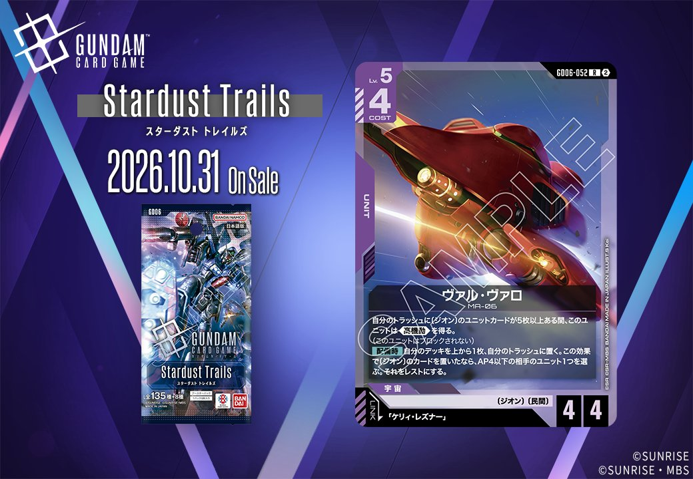
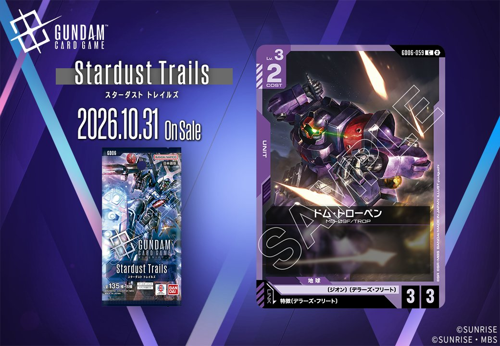
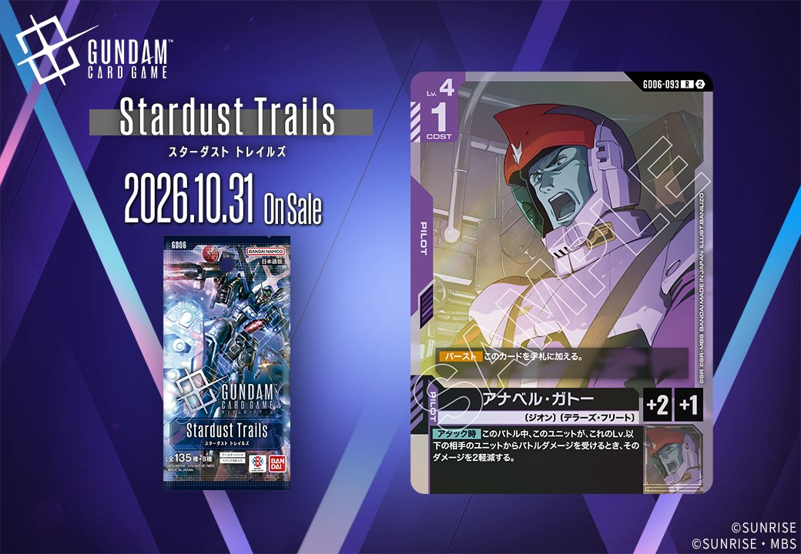
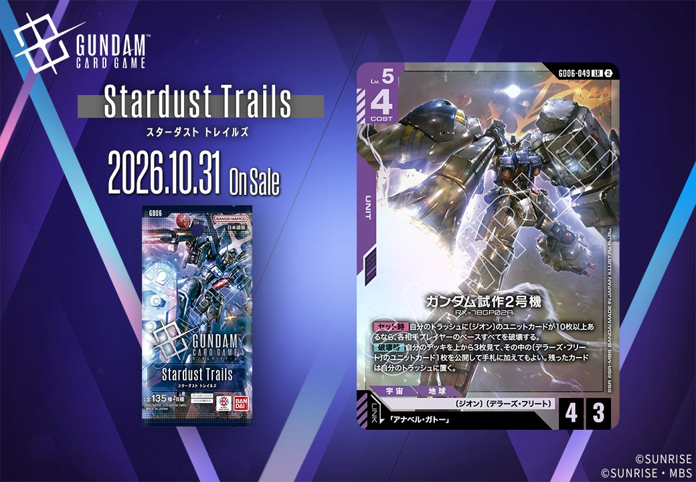
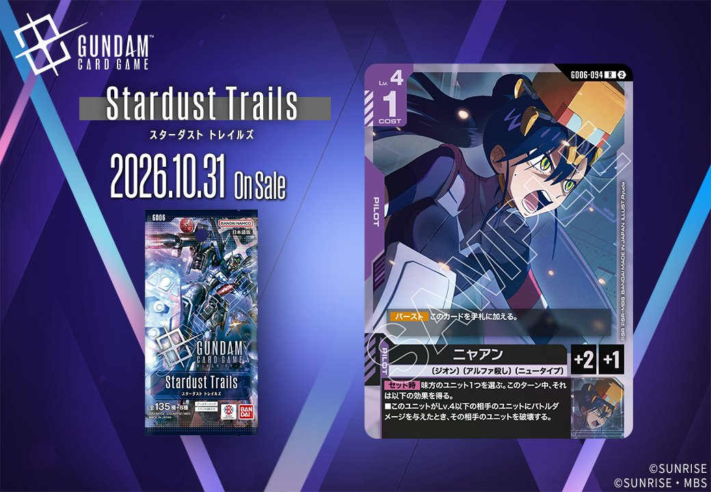

2026年10月31日発売のGD06「Stardust Trails」から、紫のUNIT 2枚、ヴァル・ヴァロ（GD06-052）とドム・トローペン（GD06-059）を紹介します。両者はリンク条件の指定方法が異なり、一方のヴァル・ヴァロは「ケリィ・レズナー」を名前で指定し、もう一方のドム・トローペンは特徴にデラーズ・フリートを持つPILOTを求めています。ドム・トローペンは特徴での指定なので、デラーズ・フリートの特徴を持つPILOTであれば名前を問わずリンク条件を満たせます。

ヴァル・ヴァロ (GD06-052)
| 色 | 紫 | タイプ | UNIT |
| Lv | 5 | コスト | 4 |
| AP | 4 | HP | 4 |
| 特徴 | 〔ジオン〕、〔民間〕 | ||
| リンク条件 | 「ケリィ・レズナー」 | ||
効果: 自分のトラッシュに〔ジオン〕のユニットカードが5枚以上ある間、このユニットは《高機動》を得る。(このユニットはブロックされない)【配備時】自分のデッキを上から1枚、自分のトラッシュに置く。この効果で〔ジオン〕のカードを置いたなら、AP4以下の相手のユニット1つを選ぶ。それをレストにする。
ヴァル・ヴァロはLv.5・コスト4でAP4/HP4のユニットで、「ケリィ・レズナー」とのリンクが設定されています。【配備時】にデッキの上から1枚をトラッシュに置き、それが〔ジオン〕のカードならAP4以下の相手のユニット1つをレストにできます。《ブロッカー》を持つユニットを対象にすれば、そのターンの守りを1枚減らせるでしょう。ただし成否はめくれたカード次第なので、〔ジオン〕の比率を高めた構築が前提になります。トラッシュの〔ジオン〕のユニットカードが5枚以上あれば《高機動》を得て、ブロックされません。この1枚落としはガンダム試作2号機の【セット時】に必要な10枚の条件にも寄与し、トラッシュを貯める動きと噛み合います。

ドム・トローペン (GD06-059)
| 色 | 紫 | タイプ | UNIT |
| Lv | 3 | コスト | 2 |
| AP | 3 | HP | 3 |
| リンク条件 | 特徴にデラーズ・フリートを持つPILOT | ||
ドム・トローペンは効果なし(バニラ)のユニットで、Lv.3・コスト2にAP3/HP3を備えています。能力を持たない分、コスト2で3/3の数値を出せる点が評価の軸になります。リンク条件は特徴にデラーズ・フリートを持つパイロットです。パイロットとの組み合わせでは、アナベル・ガトーの【アタック時】効果と噛み合います。このユニットのLv.3以下の相手から受けるバトルダメージを2軽減できるため、HP3でもバトル後に残りやすくなるでしょう。ニャアンを搭載すれば、【セット時】効果によってそのターン中、Lv.4以下の相手ユニットにバトルダメージを与えたときにそれを破壊できます。
関連カード
-
ガンダム・端白星(GD03-068)紫系デッキ内採用率0.1% (8デッキ)
-
ガンダム・端白星（第2形態）(GD03-055)紫系デッキ内採用率0.1% (5デッキ)
-

アナベル・ガトー(GD06-093)NEW紫系 — 同色・共通特徴: ジオン（新カード） -

ガンダム試作2号機(GD06-049)NEW紫系 — 同色・共通特徴: ジオン（新カード） -

ニャアン(GD06-094)NEW紫系 — 同色・共通特徴: ジオン（新カード） -
 ガンダム・バルバトスアダプト(GD03-056)紫系デッキ内採用率36% (2733デッキ)
ガンダム・バルバトスアダプト(GD03-056)紫系デッキ内採用率36% (2733デッキ) -
 三日月・オーガス(ST05-010)紫系デッキ内採用率35.7% (2711デッキ)
三日月・オーガス(ST05-010)紫系デッキ内採用率35.7% (2711デッキ) -
 ガンダム・バルバトス（第1形態）(GD02-054)紫系デッキ内採用率34.4% (2609デッキ)
ガンダム・バルバトス（第1形態）(GD02-054)紫系デッキ内採用率34.4% (2609デッキ) -
 百錬(ST05-006)紫系デッキ内採用率25.9% (1964デッキ)
百錬(ST05-006)紫系デッキ内採用率25.9% (1964デッキ) -
 グレイズ改(ST05-004)紫系デッキ内採用率25.4% (1926デッキ)
グレイズ改(ST05-004)紫系デッキ内採用率25.4% (1926デッキ)